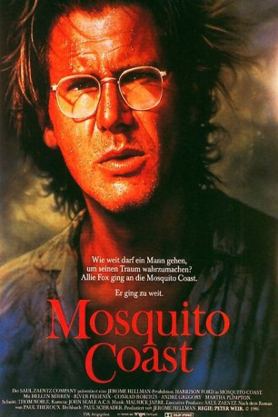
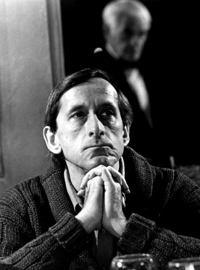

#5898 Mosquito Coast
Alternativ: The Mosquito Coast
 
 IMDB-Wertung: 6.6 / 10
IMDB-Wertung: 6.6 / 10  Metascore: 0
Metascore: 0 
Der Idealist Allie Fox wandert mit seiner Familie aus und baut sich eine neue Existenz in der sogenannten Mosquito Coast in Honduras auf. Fortan leben sie abgeschottet von der Zivilisation in ihrem kleinen Paradies. Mit der Zeit wird aber immer klarer, dass sich Allie in einen Herrscherwahn reinsteigert.
Jahr: 1986
Dauer: 118 Minuten
FSK: 12
Land: USA Studio: Warner Bros.Tonspuren: DD2.0 - ,
Untertitel:
Auflösung: 1080p (1920x1080) Größe: 8294 MB
Genre: Thriller, Drama, Abenteuer
Regisseur:  Peter Weir
Peter Weir
Drehbuch: Kevin A. McCarthy
Soundtrack:
Darsteller:
 Harrison Ford als Allie Fox
Harrison Ford als Allie Fox Helen Mirren als Mother
Helen Mirren als Mother River Phoenix als Charlie
River Phoenix als Charlie Jason Alexander als Clerk
Jason Alexander als Clerk Dick O'Neill als Mr. Polski
Dick O'Neill als Mr. Polski-  Andre Gregory als Reverend Spellgood
 Martha Plimpton als Emily Spellgood
Martha Plimpton als Emily Spellgood Conrad Roberts als Mr. Haddy
Conrad Roberts als Mr. Haddy- Butterfly McQueen als Ma Kennywick
- Jadrien Steele als Jerry
- Hilary Gordon als April
- Rebecca Gordon als Clover
- Alice Heffernan-Sneed als Mrs. Polski
- Tiger Haynes als Mr. Semper
 William Newman als Captain Smalls
William Newman als Captain Smalls- Melanie Boland als Mrs. Spellgood
- Raymond Clare als Convert 1
- Emory King als Man at Bar
- Michael Rogers als Francis Lungley
- Tony Vega Sr. als Mr. Maywit
- Aurora Clavel als Mrs. Maywit
- Michael Opoku als Bucky
- Adolpho Salguero als Drainy
- Rafael Cho als Leon
- Sofia Coc als Alice
- Margarita Coc als Veryl
- Wilfred Peters als Dixon
- Luis Palacio als Peaselee
- Juan Antonio Llanes als Mercenary
- Abel Woolrich als Mercenary
Datei: X:\1986\Mosquito Coast (1986, FSK12, 1920x1080).mkv seit 03.04.2017
Festplatte: HD 1980-1986
 Es gibt insgesamt 50 Filme in der Gruppe '1986'
Es gibt insgesamt 50 Filme in der Gruppe '1986'